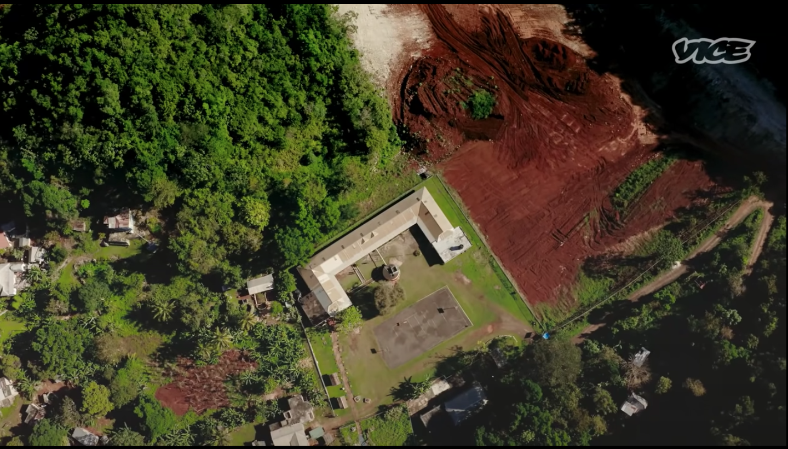

Tension Rising
The area's citizens, who are direct descendants of Maroons, swear to protect their land. Tension is rising between the residents and the government, and on one occasion, to validate protectors of the land chased police officers out with cries of protest and soulful beating of their drums.
On August 3, 2021, The Rio Cobre River was polluted by the company Windalco from chemical runoff. This river runs through the cockpit country and was a water and food source.
The indigenous people of the Cockpit country farm to sustain themselves; this is an agricultural community, and the health of the soil reflects the overall wellbeing of the people.
Gibraltar is a small community in the Cockpit Country that sits adjacent to a devastating mining pit. Their farming land is being taken away for mining, and they are left to buy produce with money they do not have.
Noranda claims that mined land can be reclaimed to be farmed again, but it is proven that the effects of Bauxite mining are irreversible; the land is left barren.

"Bauxite mining is one such major open cast mining activity which has significant negative impact on the local environment. The major threats of this activity are dust pollution, vegetation loss, forest fragmentation and biodiversity loss, negative impact on water resources, generation of wastelands and social impact.The study revealed that the legal and illegal mining activity has initiated serious environmental degradation in the region. Though mining initially provided job opportunities for limited inhabitants and generated revenue to government, it would last only for a short period. However, the damage caused to the local ecology as a result of the changed land use is permanent."
Excerpt from Studies On The Impact Of Bauxite Mining Activities On Environment In Kolhapur District by Rohan J. Lad1 and Jay S. Samant
The children attend school with a mine right next door; noise and air pollution are part of their everyday lives. The ground is littered in bright red dust that gets lifted into the air, swarming the community.
Primary School in Gibraltar with an active mine next door.
>>>>>>
>>>>>>